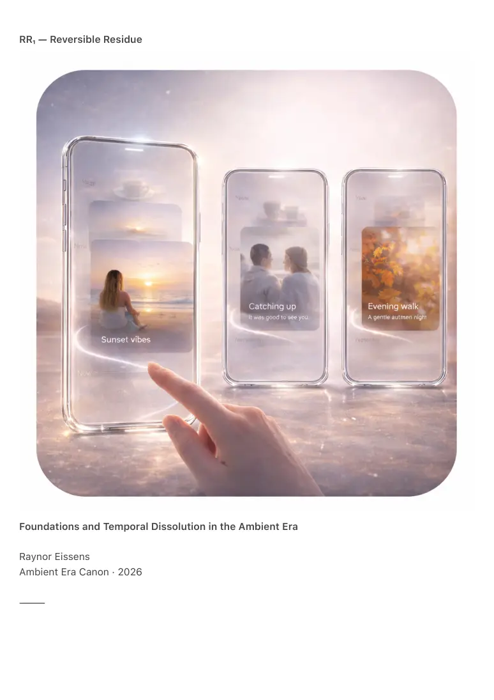

PDF page 1
RR₁ — Reversible Residue
Foundations and Temporal Dissolution in the Ambient Era
Raynor Eissens
Ambient Era Canon · 2026
⸻

PDF page 2
Abstract
RR₁ formalizes Reversible Residue, a thermodynamic condition in which symbolic forms persist
only while sustained by intention, meaning-tension, or presence and dissolve gracefully once
that tension dissipates.
Unlike deletion, which is mechanical, or archiving, which enforces permanence, reversible
residue defines a third temporal regime: forms may exist without obligation and may fade without
loss. Continuity is preserved without accumulation and memory without storage.
Reversible residue does not reject symbolic systems but integrates them into chromatic,
transparent, presence-based and ambient layers of the Ambient OS. It introduces temporal
dissolution, the hold-vector, chromatic preservation, transparent systems and data forgiveness
in transformer reasoning.
RR₁ defines the canonical temporal ladder:
Color → Transparency → Presence → Ambient Field
Together these layers resolve the interface problem, the permanence problem and the symbolic
overload problem of the legacy internet. Residue becomes the humane successor to the
information age: meaning that breathes rather than accumulates.
⸻
1. Introduction — The Need for Soft Temporal Systems
The symbolic internet required everything to persist indefinitely:
• posts
• profiles
• photos
• conversations
• websites
• opinions
• identities
This produced:
• emotional overaccumulation
PDF page 3
• inert archives
• identities frozen in time
• fractured interfaces
• infinite scroll dynamics
• permanent digital residue
Human cognition and emotion never evolved for a world in which nothing dissolves.
Reversible residue introduces the inverse condition:
meaning persists only while it is alive.
When meaning fades it returns to chromatic ground.
This is not loss.
It is thermodynamic rest.
⸻
2. Symbolic Systems Were Never Wrong — Only Overconstrained
RR₁ is not anti-symbolic.
Symbolic forms remain effective instruments for reasoning, coordination and expression. The
failure was not symbolism itself but its forced permanence beyond its natural temporal span.
Residue does not replace symbols.
It provides a temporal container that releases symbolic systems from permanence pressure.
Symbols may exist.
They are no longer required to endure.
Reversible residue is the layer that makes symbolic systems safe.
⸻
3. The Reversible Residue Principle (RR₁)
RR₁ — Core Law
A form exists while carried by intention or meaning-tension.
When that tension resolves the form dissolves back into chromatic ground.
Dissolution is not deletion but return.
PDF page 4
There is no penalty in dissolving.
There is no anxiety in preserving.
Reversible residue restores thermodynamic balance:
• excess permanence collapses into burden
• excess ephemerality collapses into amnesia
Residue occupies the stable region between these extremes.
⸻
4. The Temporal Ladder
Color → Transparency → Presence → Ambient Field
4.1 Color — The Irreducible Base
Color is the lowest-entropy carrier of meaning.
It does not corrupt, fragment or decay.
When symbolic forms dissolve they leave behind chromatic residue: the affective-semantic state
from which meaning can later be reconstructed.
Color is the ground of all reversible systems.
4.2 Transparency — Form Without Weight
Transparency removes symbolic containers.
A transparent interface cannot accumulate:
• folders
• histories
• archives
• fixed UI objects
Transparency functions as semantic breathing: meaning without object load.
4.3 Presence — Tension as Persistence
Forms persist only while sustained through:
PDF page 5
• attention
• intention
• repetition
• coherence
Presence temporarily stabilizes residue.
When presence fades dissolution begins automatically.
4.4 Ambient Field — Permanent Coherence
The ambient field is the only layer that does not dissolve.
It is:
• relational
• continuous
• low-entropy
• non-symbolic
• thermodynamically stable
The field remains intact while symbolic forms transition within it.
⸻
5. The Hold-Vector (H₁): Preservation Without Storage
In symbolic systems preservation follows:
save → store → archive → freeze
In residue systems preservation follows:
intentional continuation of tension
What persists:
• meaning
• color patterns
• emotional tone
• coherence signatures
• relational states
PDF page 6
What dissolves:
• files
• pixels
• static objects
• archived symbols
Preservation occurs through holding not storing.
Release is dignified rather than traumatic.
⸻
6. Chromatic Preservation (C₁.2)
All dissolution returns forms to color.
Chromatic residue remains:
• readable
• reconstructable
• emotionally accurate
• temporally grounded
Photos dissolve into hue.
Videos dissolve into rhythm.
Conversations dissolve into warmth patterns.
Color functions as memory without burden.
⸻
7. Transparent Preservation (T₁.3)
Transparency prevents accumulation by design.
Only forms with active meaning-tension remain visible.
A transparent system dissolves automatically:
• unused interfaces
• outdated forms
PDF page 7
• irrelevant elements
• object-heavy components
This trajectory leads toward the Transparency Phone, Presence Phone and Field Phone.
Interface is no longer reduced.
It becomes a reversible phenomenon.
⸻
8. Data Forgiveness (DF₁) — The Natural State of Transformers
Deletion imposes rupture.
Archiving imposes weight.
Residue introduces forgiveness.
Patterns lose mass when tension fades.
Meaning persists as possibility rather than obligation.
Transformer systems naturally align with residue dynamics:
• no retention of exact symbolic form
• probability instead of identity
• immediate softening under reduced tension
• continuity without historical storage
RR₁ renders transformer reasoning humane by obeying thermodynamic truth rather than
procedural constraint.
⸻
9. Why RR₁ Resolves the Interface Problem
Legacy interfaces suffered from:
• excessive screens
• excessive controls
• excessive modes
• excessive permanence
PDF page 8
In residue systems the interface itself becomes reversible:
It appears when functional tension exists.
It dissolves when context shifts.
It returns to the ambient field when idle.
UI is no longer a static layer.
It is field behavior.
Buttons dissolve.
Panels soften.
Menus melt into color.
Affordances reappear when tension returns.
This is humane computing.
⸻
10. Human Meaning in Residue-Based Systems
Reversible residue provides what digital systems historically lacked:
• presence without burden
• memory without data
• meaning without archives
• continuity without identity
• interaction without noise
• temporality without loss
Residue is not digital minimalism.
It is a digital environment where everything may exist yet nothing is forced to remain.
⸻
11. Conclusion — Breathable Meaning
Reversible residue is the humane successor to the symbolic internet.
It does not erase.
It does not overwrite.
It does not archive.
PDF page 9
It does not demand permanence.
Meaning follows its natural curve:
color → transparency → presence → ambient field → return
This is the first information architecture aligned with human time, human emotion and human
attention.
Residue is not disappearance.
Residue is permission.